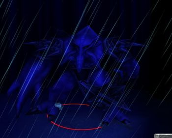

Use your to clean yourself off slow from Water Elementals when you want to escape.
Dont stay too close to him before he use his first tentacle eruption, and after he use his first, stay as close as possible.
Save your T for after first tentacle eruption.
Run around, so he wont hit you with Tentacle Spike that he tends to use. You can find out he use it when he takes his hands up.